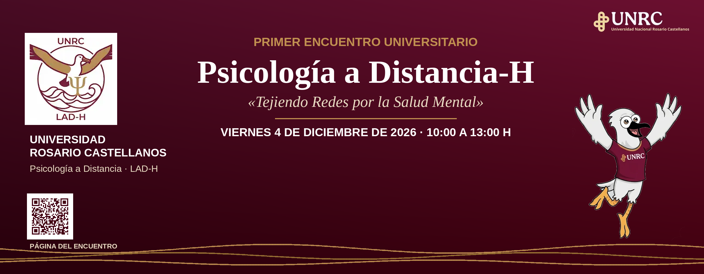

Formación académica
Las ponencias presentan trabajos de prácticas profesionales desarrollados por estudiantes de la licenciatura en distintos contextos educativos y comunitarios.

Un espacio de la Licenciatura en Psicología a Distancia de la Universidad Rosario Castellanos para compartir experiencias de prácticas profesionales, fortalecer la formación académica y tejer redes por la salud mental.
Las ponencias presentan trabajos de prácticas profesionales desarrollados por estudiantes de la licenciatura en distintos contextos educativos y comunitarios.
Los ejes del Encuentro son la formación académica, la prevención y la atención de la salud mental, desde la práctica psicológica con enfoque comunitario.
En el bloque final, los ponentes se distribuyen tres por carpa para el diálogo y la construcción colectiva con las y los asistentes.
Tres ponentes por carpa. De manera simultánea, el área de Educación Continua ofrece asesoría metodológica (12:05 a 13:00 h) y hay interludios musicales (12:00 a 12:40 h).
Leticia Guadalupe Reyes Normandía y María Patricia García Paiz
Mariana Cano Díaz
Alejandra Ramos Álvarez e Irma Luna García
Aranza Lisset Rangel González
| N° | Horario | Actividad | Asignatura / Eje | Grupo / Carpa | Nombre de los participantes | Nombre del trabajo | Docente responsable | Observaciones |
|---|---|---|---|---|---|---|---|---|
| 1 | 10:00 – 10:05 | Apertura | — | Plenaria | Mtra. Laura Lázaro Felipe | Presentación del evento | Jefa de Carrera | — |
| 2 | 10:05 – 10:10 | Apertura | — | Plenaria | Mtra. Alejandra y equipo de Psicología de las Sedes Académicas | Presentación del presídium | — | — |
| 3 | 10:10 – 10:20 | Apertura | — | Plenaria | Mtra. Alejandra | Presentación del área de Psicología | — | — |
| 4 | 10:20 – 10:32 | Apertura | — | Plenaria | Mtro. Wilbert Omar Torres Rojas · Dr. Rafael Augusto Osorio Rivera · Mtro. Oscar Adrian Jelove Jimenez · Mtro. Fernando Arnulfo Santander Guerrero | Inauguración de actividades y bienvenida | — | — |
| 5 | 10:32 – 11:02 | Apertura | — | Plenaria | Sedes Académicas | Presentación de cada institución | — | — |
| 6 | 11:02 – 11:17 | Ponencia | Prácticas profesionales | Plenaria | Leticia Guadalupe Reyes Normandía y María Patricia García Paiz | Convivencia y diversidad en la Escuela de Artesanías del INBAL: experiencias de prácticas profesionales desde la Psicología Educativa | — | — |
| 7 | 11:17 – 11:32 | Ponencia | Prácticas profesionales | Plenaria | Alejandra Ramos Álvarez e Irma Luna García | Proyecto de vida como estrategia psicoeducativa para fortalecer recursos personales en adolescentes del CONALEP Ixtapaluca | — | — |
| 8 | 11:32 – 11:47 | Ponencia | Prácticas profesionales | Plenaria | Mariana Cano Díaz | Demencia y envejecimiento: impacto psicosocial de la enfermedad en la dinámica familiar | — | — |
| 9 | 11:47 – 12:02 | Ponencia | Prácticas profesionales | Plenaria | Aranza Lisset Rangel González | Barreras de Aprendizaje y Participación (BAP) y estrategias docentes inclusivas | — | — |
| 10 | 12:05 – 12:50 | Trabajo en carpa | Prácticas profesionales | Carpa 1 | Leticia Guadalupe Reyes Normandía · María Patricia García Paiz · Mariana Cano Díaz | Convivencia y diversidad (INBAL) · Demencia y envejecimiento | — | Tres ponentes por carpa |
| 11 | 12:05 – 12:50 | Trabajo en carpa | Prácticas profesionales | Carpa 2 | Alejandra Ramos Álvarez · Irma Luna García · Aranza Lisset Rangel González | Proyecto de vida (CONALEP Ixtapaluca) · Barreras de Aprendizaje y Participación (BAP) | — | Tres ponentes por carpa |
| 12 | 12:05 – 13:00 | Actividad simultánea | Educación Continua | Espacio simultáneo | Área de Educación Continua | Asesoría metodológica de Educación Continua | — | Simultánea al trabajo en carpas |
| 13 | 12:00 – 12:40 | Actividad simultánea | — | Plenaria | — | Música | — | Interludios musicales |
| 14 | 12:40 – 12:50 | Clausura | — | Plenaria | — | Cierre del Encuentro | — | Conclusiones y despedida |
El programa completo, el cronograma, el tríptico, la orden del día y el banner del Encuentro están disponibles en la carpeta oficial de materiales.